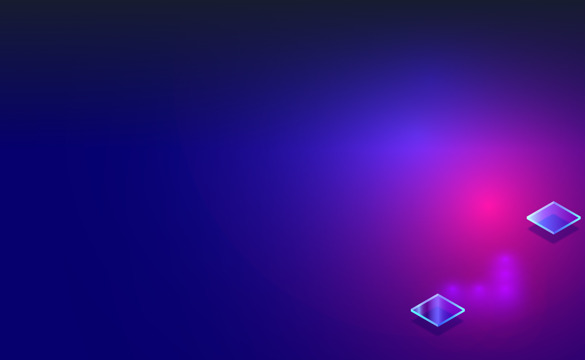

{% extends "partials/main.html" %}
{% block tabs %}
{{ super() }}
{% block content %}
{{page.content}}
{% endblock %}

Backed by NS1
Orb was born at NS1 Labs, where we're commited to making open
source, dynamic edge observabilty a reality
Get Started with Orb
{% endblock %}